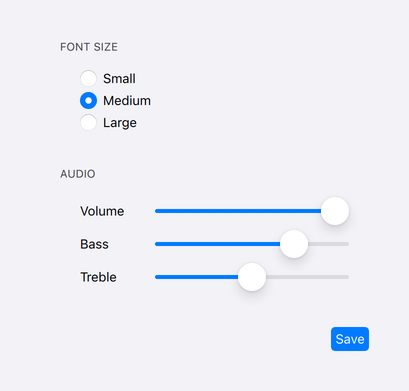
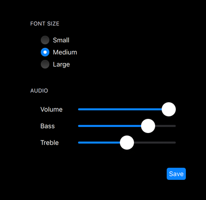

iOS Style
The iOS Style is a native-looking style for iOS based on image assets. More...
| Import Statement: | import QtQuick.Controls.iOS |
| Since: | Qt 6.4 |
Detailed Description
The iOS style is designed to look and feel as similar as possible to the native controls in UIKit. Most of the controls make use of 9-patch images to draw their components, in order to accommodate controls of varying sizes. For controls that do not have a native counterpart in UIKit, the iOS style provides a custom look based on colors and styles following iOS' Human Interface Guidelines . The iOS style is not a native iOS style, and as such, can run on platforms other than iOS. However, for the time being, it is made available only for applications running on macOS and iOS and should look the same on both platforms, besides minor differences that may occur due to differences in available system fonts and font rendering engines.
 The light theme of the iOS style. |  The dark theme of the iOS style. |
To run an application with the iOS style, see Using Styles in Qt Quick Controls.
Current state
The Tumbler control is not yet implemented for the iOS style and will fall back to use the Basic Style.
Customization
Palette
The iOS style supports palette customization via the palette property and the qtquickcontrols2.conf file. As with other styles, the exact palette roles that the iOS style uses are style-dependent. However, as most of the visual appearance of controls (for example: backgrounds) is managed through image assets, only the roles that are typically used for text will have an effect.